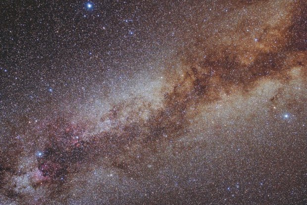

Trekëndëshi Veror i Qiellit
Përshëndetje njerëz, akordoni çdo javë të vitit 2023 për më të mirat në astronomi nga Redaktori i Astronomisë Dave Eicher, sjellë tek ju nga Celestron. Seria javore e videove të Dave do të mbulojë të gjitha ngjarjet më të fundit të qiellit, rezultatet shkencore, pasqyrat e mistereve kozmike dhe më shumë! Kjo javë është një kohë e shkëlqyer për të parë Trekëndëshin Veror, një nga asterizmat më të njohur në qiellin verior. Anasterizmi është një model jozyrtar i yjeve që nuk është një nga 88 yjësitë e njohura zyrtarisht që mbulojnë qiellin. Trekëndëshi Veror e ka marrë emrin e tij nga fakti se është i dukshëm gjatë gjithë natës gjatë verës në hemisferën veriore. Tani, më në fund është e dukshme pas perëndimit të diellit, duke u ngritur në lindje ndërsa bie nata. Trekëndëshi i verës përbëhet nga tre yje blu të shndritshëm: Deneb (magnitudë 1.3) në Cygnus, Altair (magnitudë 0.8) në Aquila dhe Vega (magnitudë 0) në Lyra. Duke filluar nga Vega, Altair ulet 35° në juglindje. Nga Altair, shikoni 38° në veri deri në Deneb, i cili gjithashtu ndodhet në lindje të Vega. Rajoni brenda (dhe vetëm jashtë) të Trekëndëshit Veror është plot me mrekulli të qiellit të thellë. Pikat kryesore përfshijnë Mjegullnajën e Amerikës së Veriut në Cygnus, Yllin e famshëm të Dyfishtë (Epsilon Lyrae) në Lyra dhe mjegullnajën planetare NGC 6781 në Aquila.